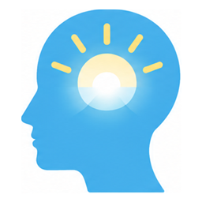
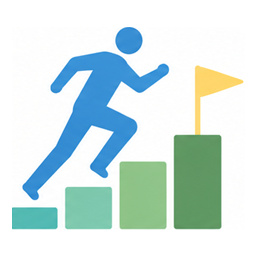
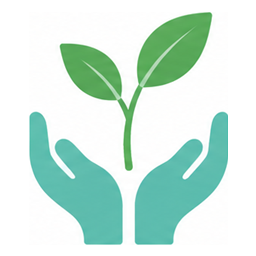
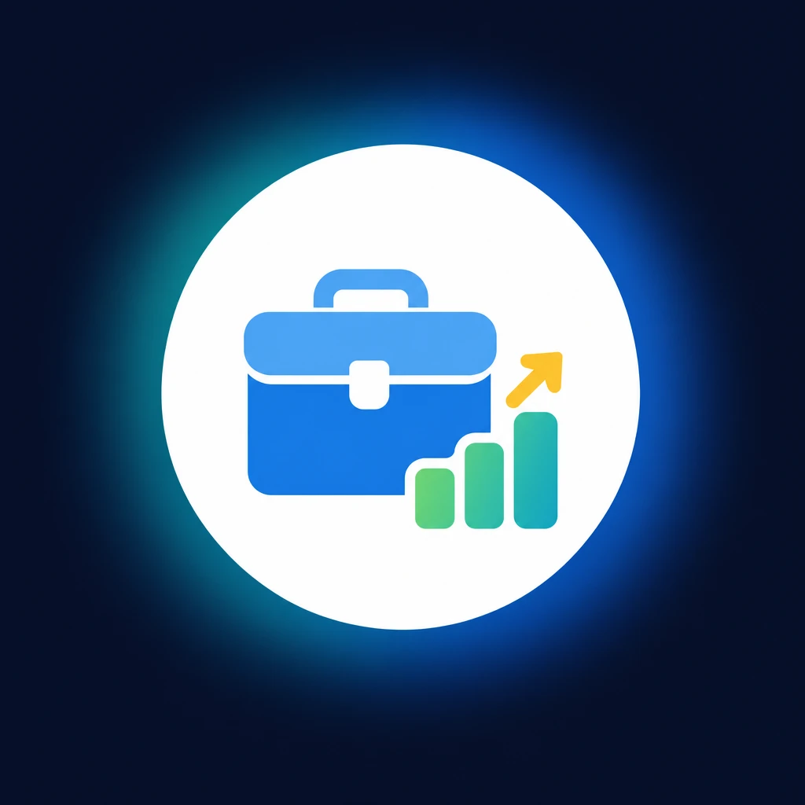
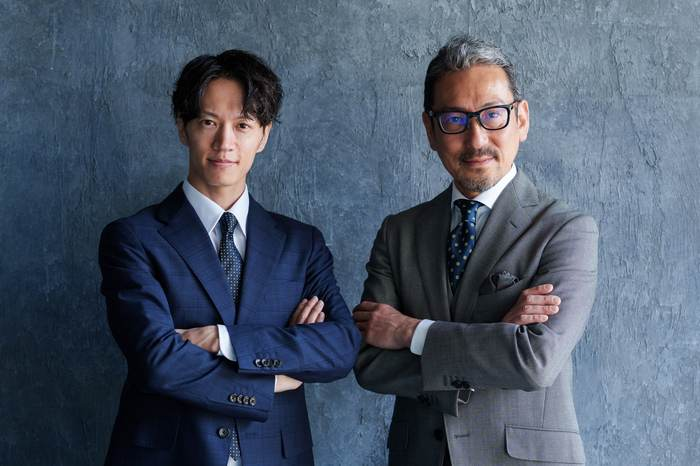

01
Step 01
自分を活かす
感情を知り、認識や価値観に気づき、自分で判断・選択できる力を育てる。自己理解が出発点です。
株式会社Brifu — EQ Platform Ver2.0
EQを学び、育て、実践し、可能性を広げる。
成長 × 実践 × ビジネスへの活用。EQの教育・実践プラットフォーム
About — EQ Platformとは
EQ Platformは、一つの講座の名前ではありません。
EQを通して、心の土台・能力・人間力を育てる。そして、その力を人材育成・ビジネス・組織・社会へつなぐ、教育・実践Platformです。
BrifuはEQを、「自分と人との、信頼ある人間関係をつくる力」と捉えています。
Step 01
感情を知り、認識や価値観に気づき、自分で判断・選択できる力を育てる。自己理解が出発点です。
Step 02
相手の感情・価値観を理解し、一人ひとりの成長を支援できる力を身につける。
Step 03
EQを仕事・組織・社会課題の解決へつなげ、より良い未来をともにつくる。
目指すのは、EQを「知っている人」ではなく、日常で実践し、自分と人を活かせる人を育てることです。
What is EQ — EQとは
生まれつきの才能ではなく、順番をたどれば誰でも育てられる力です。
まず、自分が何を感じているのかに気づく。
その感情に、名前をつけて扱えるようにする。
自分が分かるから、相手の心にも目を向けられる。
認識の違いに気づき、互いに確認しながら対話する。
感情に流されず、目的から選べるようになる。
選んだことを実行し、結果からまた学ぶ。
What Changes — 学ぶと、どう変わるか
Brifuの実践学習サイクル。学びを日常に活かし、より良い未来を創る循環です。
Brifu
自覚と実践の繰り返しで、認識が更新され、行動と未来が変わる。
EQと認識理論で、新しい視点を得る
学びを意識して行動し、体験を積む
結果とその時の感情を整理する
感情の奥の認識や思い込みに気づく
より良い選択で、新たな一歩へ
自分の成長が、
誰かの成長を
支える力になる。
このサイクルを繰り返すことで、認識が深まり、感情が整い、行動の質が高まります。
その積み重ねが、自分らしい人生と、より良い人間関係・仕事・社会を創ります。
Why — なぜ、学んでも変わらないのか
株式会社Brifuの捉え方
Brifuが大切にしてきたのは、人の成長を知識やスキルだけで捉えないこと。
人には感情があり、その奥に認識・価値観・判断基準があり、そこから選択や行動が生まれます。だからこそBrifuでは、
までを、一つの成長として考えています。その土台となるのが、次の「EQ認識理論」です。
EQ Recognition Theory — EQ認識理論
同じ出来事でも、感じ方や行動が違うのは、認識が違うから。
EQ Platformは、この「EQ認識理論」が土台です。
出来事は変えられなくても、受け取り方（認識）に目を向ければ、感情と行動は変えていけます。相手や環境より先に、自分の内側から始められます。
変化の第一歩は、「気づくこと」。感情が動いた瞬間に「私は今、どんな認識をしているのだろう？」と問うことで、同じ悩みの繰り返しから抜け出せます。
学び、実践し、振り返るほど、認識の質は高まります。感情を適切に活かし、自分と他者を尊重した選択ができるようになります。
項目にカーソルを合わせる（スマホはタップする）と、補足が現れます。
Two Directions — 人の成長には、2つの方向がある
Horizontal Growth
できることを増やす
知識・技術・対人スキルなど、「何ができるか」を増やす成長。EQスキルが中心に担います。
Vertical Growth
人としての土台・あり方を育てる
何を感じ、なぜそう捉え、何を大切にしているのか。自分軸・あり方・人間力を育てる成長です。EIAで土台をつくり、EQ Humanityで深めます。
心の土台 × EQスキル × 人間力 × 実践4つが統合されて、はじめて本当の成長が生まれます。
MAP — EQ Platform 全体マップ
縦成長・横成長・実践・ビジネスへの活用が、
どうつながっているかを表しています。
HOVER A NODE
学びの場にカーソルを合わせる
つながっている学びの場が光ります。球をクリック（タップ）すると、その球へ近づきます。
つながり
これは、受講の順番ではありません。
「何を学びたいか」「何に活かしたいか」で、入口を選べます。
動画・診断・体験会など、無料のコンテンツから、EQに触れる。
体験する → おすすめの入口EQ Skills感情を手がかりに、自分と関わる力・他者と関わる力を、スキルとして学ぶ。
詳しく見る →
おすすめの入口EIA自己理解・自己受容・あり方・判断軸・行動変容を通して、メタ認知力を育てる。
詳しく見る →
おすすめの入口EQTMEQを高め、伸ばし、人生・仕事・人間関係・組織の中で、実践・活用し続ける。
詳しく見る →
おすすめの入口EQ HumanityEIAで育てた力を土台に、他者・組織・社会へ、良い影響を与える人材へ。
詳しく見る →
おすすめの入口EQ Business NexusEQを活用したビジネスコンサルティングの提供と、そのスキルの習得。
詳しく見る →目的に応じた案内例です。正式な受講資格・前提条件を示すものではありません。
| 対象 | おすすめの入口例 | その後の活用例 |
|---|---|---|
| 個人 | EQ Skills ／ EIA | EQTMで、実践を継続 |
| リーダー | EIA ／ EQ Skills | EQTM、目的に応じてEQ Humanity |
| チーム | EQ Skills | EQTMで、日常・チーム内に定着 |
| 組織 | EQ Skills ／ EIA ／ EQ Business Nexus | 人材育成や、組織づくりへ活用 |
| 企業・経営者 | EQ Business Nexus ／ EIA | 経営への導入・幹部育成・組織での実践 |
対象によって、学ぶ順番が一律に決まるわけではありません。
提供形態や受講条件は、ご相談のうえでご案内します。
6 Learning Places — 6つの学びの場
ここからは、6つの学びの場を、順にご紹介します。
Stage 01入口・はじめの一歩
EQとの出会いの入口
EQに触れ、自分を知るきっかけをつくる場所です。
情報・診断・体験・コンテンツが、そろっています。
Gateメンバー（無料）
Stage 02心の土台を育てる縦成長の土台
自分を知り、整え、選び直せる力を育てる
感情が動いた出来事を、自分の成長に変えながら、メタ認知力を育てる領域です。縦成長の土台となり、EQ Humanityへつながります。
自己理解・自己受容・あり方・判断軸・行動変容を通して、自分を知り、整え、選び直せる力が育ちます。
主な学び：EIA Gate ／ EQリカバリー ／ EIA STEPⅠ〜Ⅳ 等
EIA を詳しく見るStage 03EQを使う力を育てる横成長
スキル習得ステージ
感情を手がかりに、心の動きの特徴を知る。そして、自分と関わる力・他者と関わる力を、スキルとして身につけます。
人生・仕事・人間関係で、すぐに使える学びです。
Stage 04EIAのその先縦成長・専門人材育成
育てた力を、他者・組織・社会に活かす人材へ。
EIAで育てたメタ認知力・あり方・判断力を、土台に。
他者・組織・社会へ、良い影響を与える人材を育てる領域です。現在は、2つの育成を中心にしています。
人と組織の成長を支える人材。EQ Business Nexusで、経営・組織の現場へつながります。
EQを活用して、人を育てる専門人材
Stage 05横断的な実践Platform
EQ Total Management
EQ実践トレーニングを含み、EQを高め、伸ばす。そして、人生・仕事・人間関係・組織の中で、実践・活用し続けるPlatformです。
すべてを学び終えてから始めるのではなく、学びながら実践し、仲間とともに成長していきます。
Stage 06ビジネス専門領域・独立した入口
EQをビジネスに活かす。
ビジネスに活かす力を、身につける。
EQ認識理論などを活用したビジネスコンサルティングと、EQを取り入れたコンサルティングスキルの習得。この2つを通して、経営・事業・組織づくりへの活用を支援します。
EQ Humanityの「組織No.2育成」とつながり、経営者の右腕となるNo.2を、組織の中で育てていきます。
① ビジネスコンサルティング
EQ認識理論などを活用し、経営・事業・組織づくり・人材育成などを、個別に伴走して支援します。
② ビジネスコンサルティングスキルの習得
EQを取り入れたビジネスコンサルティングの知識・スキルを学び、自分のビジネスに活かします。
こんな方へ
個人向け伴走の3ステップ
誰に、どんな価値を届けたいのか。
ターゲット・提供価値・価格を設計する。
発信・募集・顧客導線を整える。
企業・組織には、課題に合わせて、EQによる人材育成・組織づくりを支援します。組織全体の信頼と自律性を高めていきます。
EQを学ぶだけでなく、自分の仕事として、社会へ届けるところまで伴走します。
Results — 学びの結果、得られるもの
講師・コーチ・コンサルタント
伝える力だけでなく、相手の感情・価値観・認識に合わせて関わる力を身につける。一人ひとりに合ったアプローチで、本質的な変化を引き出せるようになります。

経営者・リーダー
メンバーの感情・価値観・認識を理解し、その人らしい成長を支援するリーダーシップを育てる。指示ではなく、可能性を引き出す関わりへ変わります。
人材育成担当者・教育者
研修や教育プログラムにEQの視点を取り入れ、「聞いて終わり」にならない学びの場を設計する力を身につけます。
Start — EQ Gate から始める
自分を活かす。
人を活かす。
その力を、社会へ活かす。
入口は一人ひとり違っても、その先はつながっています。
まずは、無料のEQ Gateで、EQに触れてみてください。